Flora of Australia has over 20,000 vascular and 14,000 non-vascular plants, 250,000 species of fungi and
3,000 lichens. About 86% of these species are endemic to Australia and can not be found anywhere else in
the world.
To know more about the number of species in Australia, click here
The flora of Australia can be broken down into 4 main categories:
Plants categories in Australia
-
Angiosperms (Flowering Plants)
These make up majority of the plants in Australia and over 90% of them are endemic.
-
Acacia (Wattles)
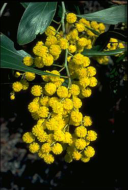
There are more than 1200 species of Acacia in Australia, which are commonly known as Wattles.These plants occupy vast areas of land in Australia and can grow in various habitats. They are widespread in regions like Canberra, New South Wales, Adelaide and Victoria.
-
Eucalyptus
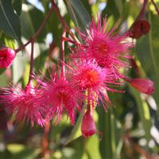
There are over 2800 species of Eucalyptus found in Australia. These are also commonly known as Gum trees. The flowers of this tree have lots of nectar and attract a range of birds and bees. Koalas also feed on certain species of eucalyptus. The Blue Mountains in Australia has the world’s most diverse range of eucalyptus.
-
Acacia (Wattles)
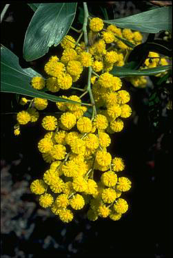
-
Gymnosperms (Seed Only Plants)
These are the seed bearing plants and they are fertilized by the help of pollen grains. There are about 120 species of Gymnosperms in Australia. Around 95% of these are endemic.
-
Cycads
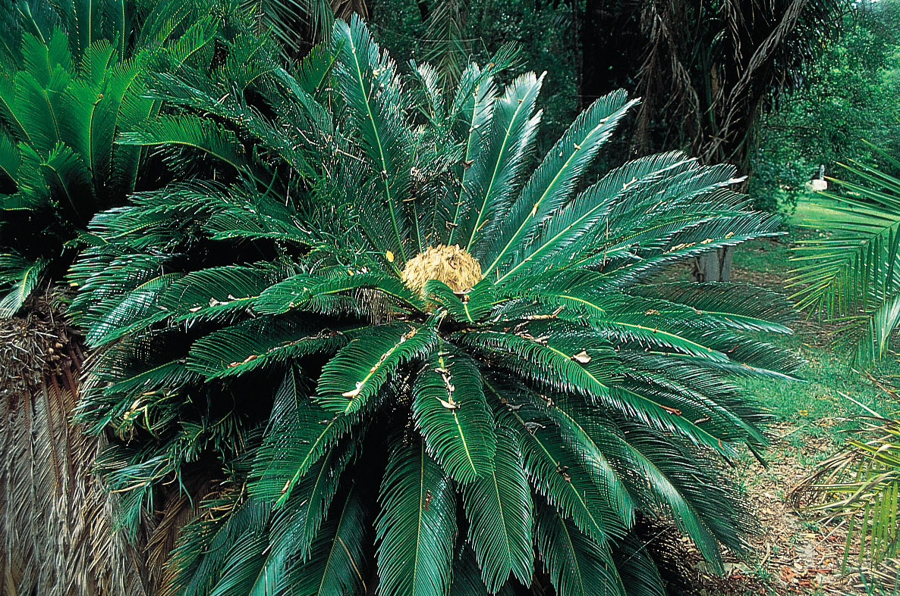
There are about 60 species of Cycads found in northern and eastern Australia and few in western Australia. These plants are believed to have existed for 200 millions years. Most parts of these plants are poisnous to humans, and should not be eaten.
-
Conifers
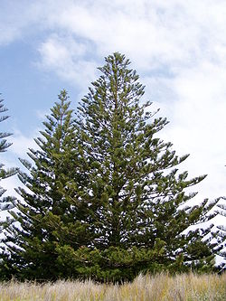
There are about 40 speices of Conifers also known as Pinophyta in Australia. Mountainous regions provide the most suitable habitat for these plants to grow. Tasmania has the most diversity of conifers in Australia. These also have economic importance due to their softwood which provides great economic value.
-
Cycads
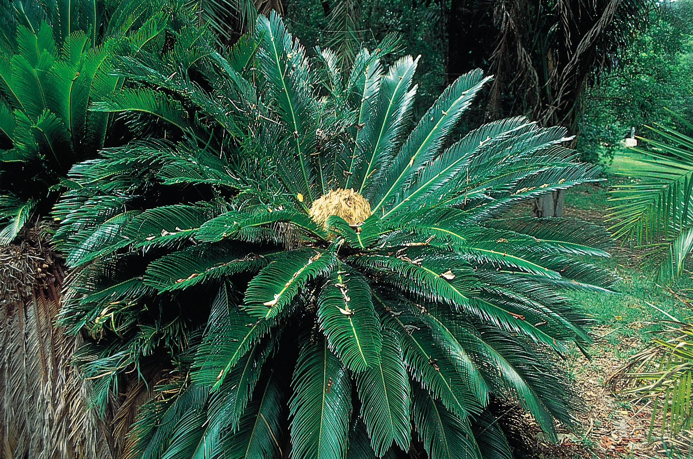
-
Ferns and Allies (Monilophytes)
These are vascular plants which do not have any seeds or flowers. They use their spores to reproduce. There are over 500 species of ferns and allies and about one-third of them are endemic to Australia.
-
Pteriphodytes
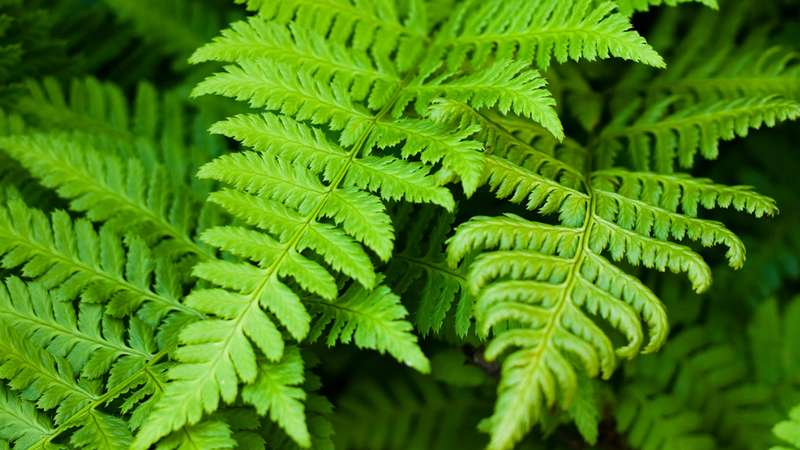
They prefer a cool and moist climate to grow. Majority of these Australian species are found near rainforests and bushlands. These do not produce flowers or seeds and their reproduction occurs through spores.
-
Pteriphodytes
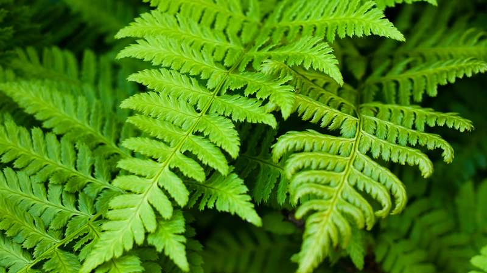
-
Nonvascular Land Plants
Although a little is known of these plants, they play a major role in the ecosystem. The size of non-vascular plants can vary from single celled organisms like algae to complex colonies of lichens and fungi that stretch over several metres. This group includes algae, bryophytes, fungi and lichens.
-
Bryophytes
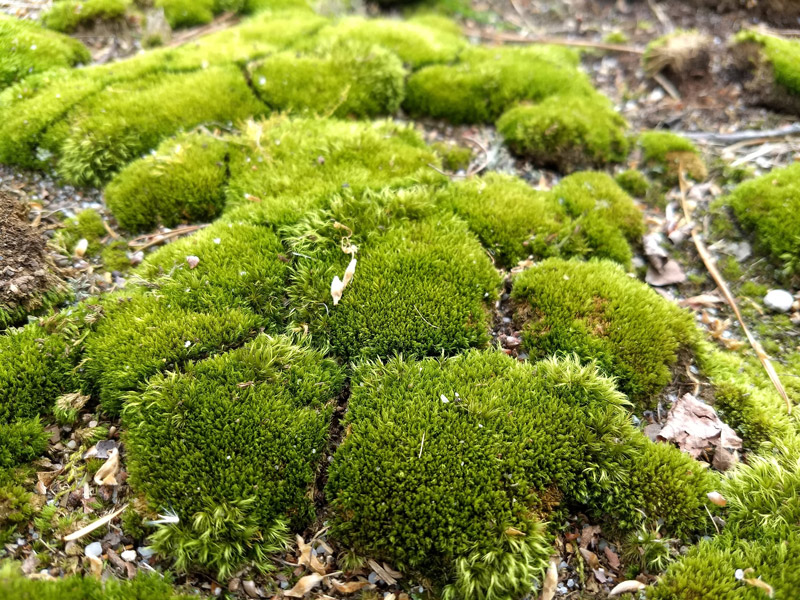
Bryophytes are non-vascular plants. This means they do not have an internal system for conducting water and processed matter (xylem and phloem). They reproduce using spores. Bryophytes comprise of three groups: Mosses, Liverworts and Hornworts. They play a critical role in the environment and stabilise arid soils. There are about 1000 speices of moss in Australia. They have different sizes from about a millimeter in size to trailing plants that are a meter long.
-
Algae
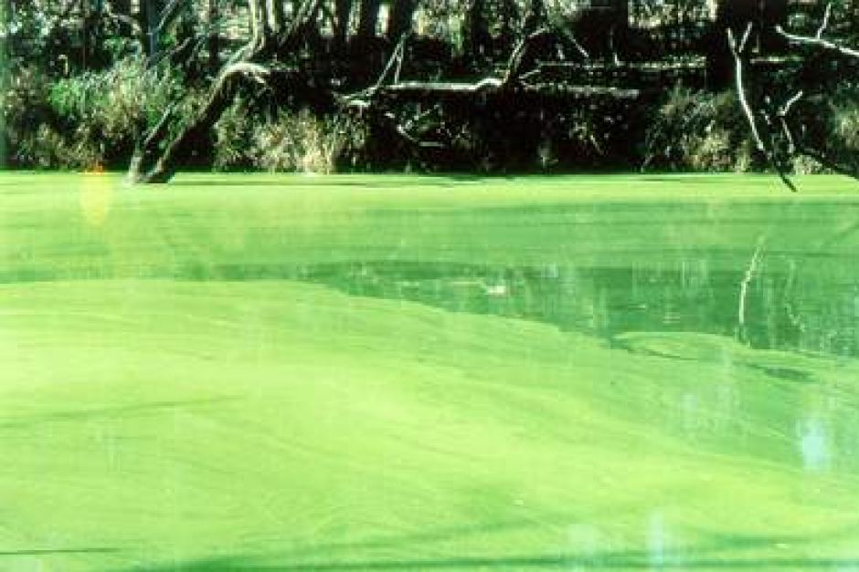
Algae are the photosynthetic animals and do not have embryos. They help in the nutrient cycling, and provide food and shelter to marine animals. There are about 10,000 species of algae in Australia but very little of them is known and documented.
-
Fungi
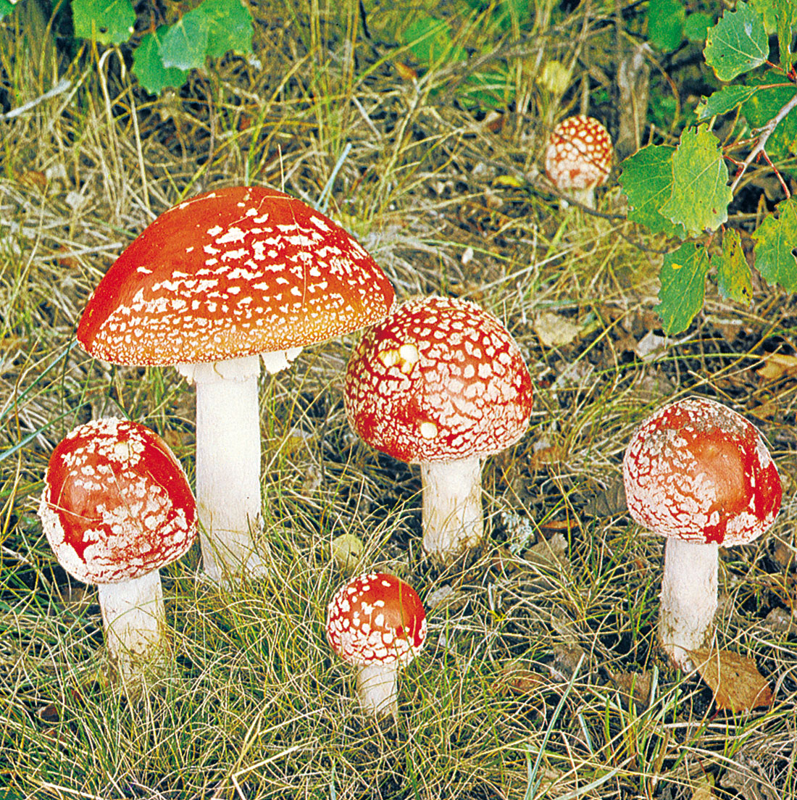
Fungi are a diverse group of organisms that can not make their own food using photosynthesis and rely on their surroundings. They play an important role by recycling nutrients in the environment as they feed on dead plants and animals. There is an estimation of 250,000 species of fungi in Australia and only 5% of them are studied and described.
-
Lichens
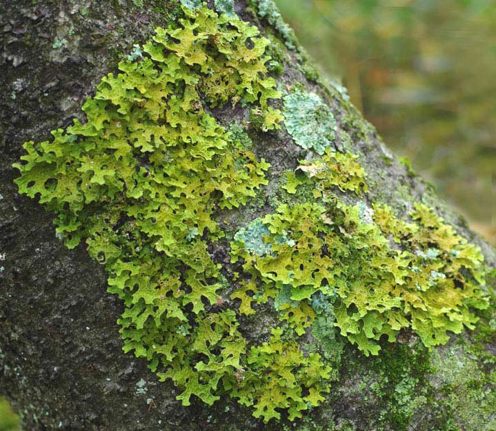
Lichen is a symbiosis between two different organisms- fungi and algae. Lichens can grow in any habitat ranging from ice cold regions to hod arid deserts due to their symbiotic relation. In lichens, fungi receive carbohydrates as a result of photosynthesis from algae and algae benefit by receiving water and nutrients from fungi. Lichens help us by absorbing the pollutants in the environment and help scientists extract and examine the level of these toxins in the environment. There are over 3000 species of lichens known in Australia, 34% of which are endemic.
-
Bryophytes
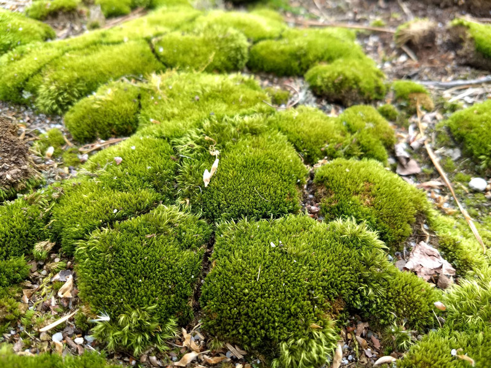